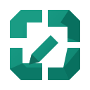

FRÅN SKÄRMKLIPP TILL IDÉ
Fånga det du ser. Sätt en skala och rita direkt på bilden.Samla flera klipp på samma arbetsyta.
eller klistra in med ⌘ / Ctrl V
Skärm, fönster eller egen bild
Två punkter ger din skala
Mått, linjer och kommentarer
Ta ett skärmklipp, klistra in en bild eller dra in flera bilder. Dra kortens rubrik för att flytta dem. Arbetsytan sparas automatiskt i den här webbläsaren.
Skalan gäller bilder med enhetlig skala. Fotografier med perspektiv kräver särskild hänsyn. Skärmklipp och urklipp kräver webbläsarstöd och tillstånd.